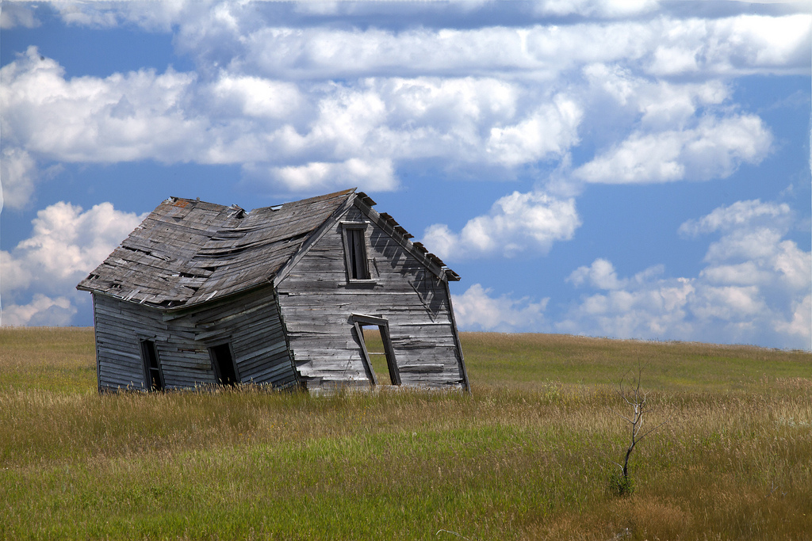

|  |
History
The School of Christ's Chosen's history began 4,000 years ago at the dawn of time. God Himself wrote the history of men and in it, the workings of an institution designed to save those who are virtuous. The land itself has been shaped by Christ's community since 1984. Leanore Patterson, Noah Handers, Jackie Macanev, and Yani Lavix were the initiators of Christ's children. They started with a plot of land solely containing an old shack and finished with a stronghold of God's love. This institution is steeped in Christ's blood and body, brought by our strong devotiona and care. Though most of history will soon end, this plot of land will extend into eternity, nutured by Christ's love. |
School of Christ's Chosen
4090 E Street, Flat Mountain, MT 67421 318-786-1124 Fax: 318-786-1156